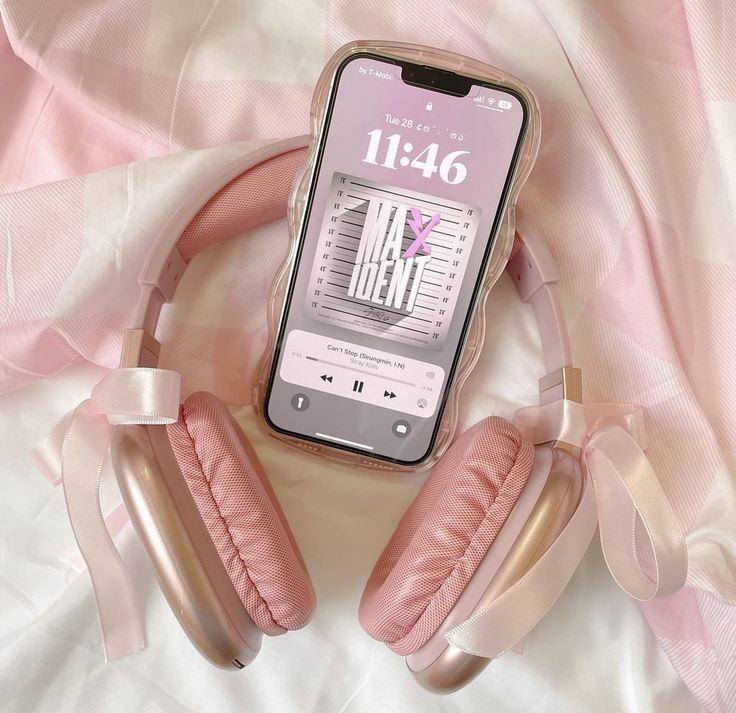
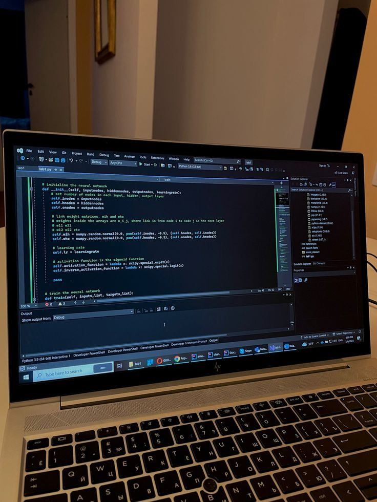

Hobi

Saya bisa menyelesaikan masalah dengan dua hal: waktu yang baik dan playlist yang tepat. Setiap kali saya mendengarkan lagu favorit, rasanya seperti mendapatkan dorongan semangat yang baru. Musik membantu saya merelaksasi pikiran dan menemukan inspirasi, seperti teman yang selalu ada di saat-saat sulit. Kadang, saat saya tenggelam dalam melodi, saya merasa bisa menghadapi apa pun yang datang.
Pelajaran Kesukaan

Pelajaran kesukaan saya adalah ngoding pemrograman. Bagi saya, menulis kode itu seperti menyusun puzzle yang menantang—setiap baris memiliki tujuan, dan saat semuanya terhubung, rasanya memuaskan! Saya suka mengeksplorasi logika dan kreativitas yang bisa diungkapkan melalui kode. Setiap tantangan yang saya hadapi justru semakin membuat saya bersemangat untuk belajar lebih banyak!
Makanan Kesukaan

Mie ayam adalah makanan kesukaan saya. Setiap kali menyantapnya, saya selalu merasa puas dengan rasa gurih kuahnya dan tekstur mie yang kenyal. Ditambah potongan ayam dan sambal sedikit, sudah jadi kombinasi sempurna. Mie ayam selalu berhasil membuat hari saya lebih baik!